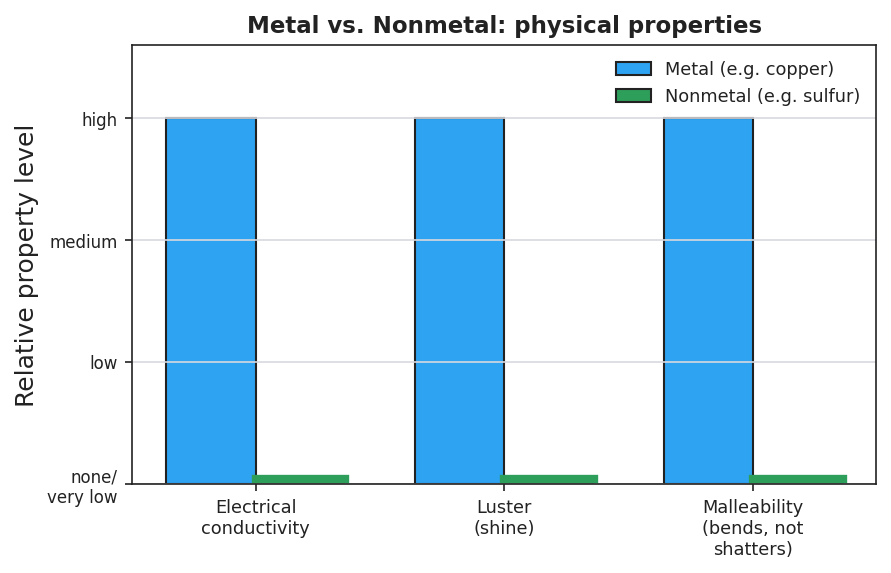

01 Phenomenon
Two pure solids sit on the front table: a piece of bright copper and a lump of dull yellow sulfur. Your teacher taps each one — the copper rings and bends without breaking; the sulfur crumbles into powder. Each is touched to a battery-and-bulb circuit: the copper lights the bulb, the sulfur leaves it dark. Same shelf, same lab — two elements that could not behave more differently.
02 Driving question
Why are metals shiny, bendable, and able to carry electricity, while nonmetals are dull, brittle, and insulators — and can we predict which class a new element belongs to?
03 Notice & wonder
| I notice… | I wonder… |
|---|---|
Turn & Talk #1: Your teacher has a third mystery sample. Before you see it, name the specific tests you would run to decide whether it acts more like the copper or more like the sulfur.
04 Initial model
Before your teacher names anything, look at the element samples on your tray. Sort them into two piles by how they behave. For each sample, write the one property you used first to decide.
| Sample | “Copper pile” or “Sulfur pile”? | The first property I used to decide |
|---|---|---|
Was there a sample that did not fit cleanly into either pile? Which one, and why?
05 Investigate
Part 1 — Property-comparison lab
Test every sample for the three properties below. Record what you observe. (Goggles on for the mallet test; do not taste or grind any sample.)
- Luster: shiny or dull?
- Electrical conductivity: does it light the bulb / complete the circuit? (yes / a little / no)
- Mallet test: does it flatten (malleable) or shatter/crumble (brittle)?
| Sample | Luster (shiny/dull) | Conducts? (yes / a little / no) | Mallet test (flattens / shatters) |
|---|---|---|---|
| Copper (Cu) | |||
| Aluminum or Iron (Al/Fe) | |||
| Carbon — graphite (C) | |||
| Sulfur (S) | |||
| Silicon or Boron (Si/B) |
Part 2 — Javalab: why metals bend instead of break
Watch “The Ductility and Malleability of Metal” (Javalab). When the metal is hammered, what do the atoms do?
Why would a brittle sample (like sulfur) shatter instead of flattening like the metal?
Part 3 — Reading the property chart
Look at figures/metal_vs_nonmetal_properties.png:

On how many of the three property tests does the metal (copper) score higher than the nonmetal (sulfur)? _______________
In one sentence, what pattern does the chart show about metals versus nonmetals?
06 Make it make sense
For each described element, classify it as a metal, nonmetal, or metalloid, and give the property evidence. (These are new elements — use the pattern, not your lab samples.)
Element A is shiny, bends flat under a hammer, and lights the conductivity bulb brightly.
- Classification: _______________________________________________
- Property evidence (name two): _______________________________________________
- One prediction about how it behaves: _______________________________________________
Element B is dull, shatters into pieces when tapped, and does not light the bulb.
- Classification: _______________________________________________
- Property evidence (name two): _______________________________________________
- One prediction about how it behaves: _______________________________________________
Element C has a slight shine but is brittle, and it lights the bulb only very dimly.
- Classification: _______________________________________________
- Why does it not fit cleanly as a metal or a nonmetal? _______________________________________________
- One real-world use this “in-between” property might allow: _______________________________________________
07 Key vocabulary
- metal
- an element with a cluster of properties: luster (shiny), high electrical and heat conductivity, and malleability/ductility (bends and reshapes without shattering); most metals tend to lose electrons when they react; examples include copper, iron, and aluminum
- nonmetal
- an element that is the property-opposite of a metal: dull (no luster), a poor conductor / insulator, and brittle when solid (shatters rather than bends); many nonmetals react by gaining or sharing electrons; examples include sulfur, oxygen, and chlorine
- metalloid
- an element with intermediate, in-between properties that does not fit cleanly as either a metal or a nonmetal: it may have partial luster and conducts electricity only a little (semiconductor); silicon and boron are the classic examples
Use each term in a sentence about today’s investigation. Do not copy the definition — describe something you actually did or observed.
metal: _______________________________________________ _______________________________________________
nonmetal: _______________________________________________ _______________________________________________
metalloid: _______________________________________________ _______________________________________________
08 Revise your model
Return to your Initial Model (the two-pile sort). Revise it:
Re-label the two piles with their real class names: ___________ and ___________.
Move the sample that fit neither pile into a third column. That class is called: ___________.
Under each class name, write the three-property cluster you found:
Metals are ___________, ___________, and ___________. Nonmetals are ___________, ___________, and ___________.
Then finish this Because / But / So sentence:
Copper conducts electricity and bends under a hammer, but sulfur stays dark and shatters, because __________________________________________, but __________________________________________, so __________________________________________.
09 Exit ticket
A mystery element, “Element Z,” was tested in the lab. It is dull and grayish, shatters into pieces when tapped, and does not light the conductivity bulb.
- Classify Element Z as a metal, nonmetal, or metalloid.
- Give two property observations from the description that support your classification.
Observation 1: _______________________________________________
Observation 2: _______________________________________________
- In one sentence, predict one thing about how Element Z is likely to behave (its reactivity or how it would act in a circuit), and explain why your classification lets you make that prediction. Try to use the word pattern.
10 Explore further
- Metal vs. nonmetal property-comparison lab: Students test a small tray of element samples (copper, aluminum or iron, carbon/graphite, sulfur, and a silicon or boron sample if available) for three properties — electrical conductivity (battery + bulb or a conductivity tester), malleability (gentle tap with a mallet: does it flatten or shatter?), and luster (shiny or dull?). They record results in a table and sort the samples into "metal-like" and "nonmetal-like" piles, then notice the in-between sample. Connect to `figures/metal_vs_nonmetal_properties.png`.
- The Ductility and Malleability of Metal — Javalab: the interactive simulation (`javalab.org`, "Ductility and Malleability of Metal") lets students stretch and hammer a metal's atomic lattice on screen and watch the atoms slide past one another without the bonds breaking — a clean visual for *why* metals bend instead of shatter. Use it during Explore as a virtual station, or project it during Explain to model the particle behavior behind malleability.
- Classification figure: `figures/classes_of_elements.png` summarizes the three classes, their property clusters, and example elements — use for the consensus model in Phase 3/4.